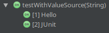

org.junit.jupiter
junit-jupiter-api
5.2.0JUnit 5
Next Generation Testing
on the JVM
Heads Up
JUnit 5 is ready for production use!
This is based on 5.2.0
(released 29th of April 2018).
Workshop
slides @ slides.codefx.org/junit-5
exercises @ github.com/nicolaiparlog/course-junit-5
read
READMEand look for TASKs in test classesfocus on online resources not slides
(user guide, Javadoc, blog posts, SO…)
JUnit 5 Links:
- Home @ junit.org/junit5
user guide: /docs/current/user-guide/
Javadoc: /docs/current/api
- Other locations
GitHub repo: github.com/junit-team/junit5
Twitter: @junitteam
- My stuff
articles under blog.codefx.org/tag/junit-5/
extensions on junit-pioneer.org
First steps
| First Steps |
|
|
| Mechanisms |
| Sophisticated Tests |
| From 4 To 5 |
| Extensions |
Setup & Tools
| First Steps |
|
|
| Mechanisms |
| Sophisticated Tests |
| From 4 To 5 |
| Extensions |
Writing tests
Add test dependency:
Have fun!
Writing tests
No specific test library support required.
These all work out of the box:
Mockito, PowerMock
AssertJ, Google Truth,
Hamcrest, FestAssert
Running tests
Add test dependency:
org.junit.jupiter
junit-jupiter-engine
5.2.0Running tests
With build tools:
Maven:
since Surefire 2.22.0
add
testdependency on engine
Gradle:
since 4.6
add
testRuntimedependency on engineactivate JUnit 5:
test { useJUnitPlatform() }
Running tests
With IDEs:
Eclipse: since Oxygen.1a (4.7.1a)
NetBeans: not even an issue
Running tests
As part of JUnit 4
individual classes:
@RunWith(JUnitPlatform.class) public class JUnit5Test { ... }all classes:
@RunWith(JUnitPlatform.class) @SelectPackages({ "my.test.package" }) public class JUnit5TestSuite { }
Running tests
There is a console launcher:
# run all tests
java -jar junit-platform-console-standalone.jar
--class-path ${path_to_compiled_test_classes}
--scan-class-path
# run a specific test
java -jar junit-platform-console-standalone.jar
--class-path ${path_to_compiled_test_classes}
--select-class ${fully_qualified_test_class_name}Setup & Tools
Summary
native support in Maven, Gradle, IntelliJ, Eclipse
(remember to add the engine as dependency)for outdated tools, run with JUnit 4
console launcher as last resort
Basics
| First Steps |
|
|
| Mechanisms |
| Sophisticated Tests |
| From 4 To 5 |
| Extensions |
What’s new?
class JUnit5Test {
@Test
void someTest() {
assertTrue(true);
}
}⇝ Package visibility suffices!
What’s new?
@BeforeAll
static void beforeAll() { ... }
@BeforeEach
void beforeEach() { ... }
@AfterEach
void afterEach() { ... }
@AfterAll
static void afterAll() { ... }⇝ Lifecycle annotations have new names.
What’s new?
@Test
void assertAllProperties() {
Address ad = new Address("City", "Street", "42");
assertAll("address",
() -> assertEquals("C", ad.city),
() -> assertEquals("Str", ad.street),
() -> assertEquals("63", ad.number)
);
}⇝ assertAll gathers results from multiple assertions
What’s new?
Output if assertAll fails:
org.opentest4j.MultipleFailuresError:
address (3 failures)
expected: <C> but was: <City>
expected: <Str> but was: <Street>
expected: <63> but was: (42)What’s new?
@Test
@Disabled("Y U No Pass?!")
void failingTest() {
assertTrue(false);
}⇝ @Ignore is now @Disabled.
What’s new?
@Test
@EnabledOnOs(OS.LINUX)
void runsOnLinux() {
assertTrue(IS_FREE_SOFTWARE);
}⇝ Conditional execution with @Disabled variants!
What’s new?
@Test
@DisabledOnFriday
void failingTest() {
assertTrue(false);
}⇝ Convenient Extensibility.
But how?
What’s new?
@DisplayName("A stack")
class StackTest {
@Test
@DisplayName("when new, is empty")
void isEmpty() { /*...*/ }
@Test
@DisplayName("when new and popped, "
+ "throws EmptyStackException")
void throwsExceptionWhenPopped() { /*...*/ }
}What’s new?
Effects of using @DisplayName:

⇝ Human-readable names!
What’s new?
class CountTest {
// lifecycle and tests
@Nested
class CountGreaterZero {
// lifecycle and tests
@Nested
class CountMuchGreaterZero {
// lifecycle and tests
}
}
}⇝ @Nested to organize tests in inner classes!
What’s new?
@Nested works great with @DisplayName:

What’s new?
@Test
void someTest(MyServer server) {
// do something with `server`
}⇝ Test has parameters!
But where do they come from?
What’s new?
@ParameterizedTest
@MethodSource("createWords")
void testWordLengths(String word, int length) {
assertEquals(length, word.length());
}
static Stream<Arguments> createWords() {
return Stream.of(
Arguments.of("Hello", 5),
Arguments.of("Parameterized", 13));
}⇝ Stellar support for parameterized tests!
What’s new?
Summary
lifecycle works much like before
@DisplayNameimproves readabilitymany details were improved
awesome new features
seamless extension
Mechanisms
| First Steps |
| Mechanisms |
|
|
|
|
|
| ... |
Disabling tests
| First Steps |
| Mechanisms |
|
|
|
|
|
| … |
Failing tests
Why do tests fail?
something broke for good ⇝ fix it
something broke temporarily ⇝
@Disabledsomething fails under certain circumstances
⇝ conditionally@Disabled
We’ll talk about the latter.
Conditional tests
JUnit 5 comes with lots of conditions
based on:
operating system
Java version
system properties
environment variables
scripts
Conditional tests
They all come in two forms:
@Enabled…@Disabled…
Just slap them on the test method:
@Test
@EnabledOnOs(OS.LINUX)
void runsOnLinux() { /*...*/ }OS conditions
Based on operating system
(LINUX, WINDOWS, MAC, …):
@EnabledOnOs(LINUX)
@EnabledOnOs({ WINDOWS, MAC })
@DisabledOnOs(LINUX)
@DisabledOnOs({ WINDOWS, MAC })Java version condition
Based on Java version
(JAVA_8, JAVA_9, JAVA_10, …):
@EnabledOnJre(JAVA_8)
@EnabledOnJre({ JAVA_9, JAVA_10 })
@DisabledOnJre(JAVA_8)
@DisabledOnJre({ JAVA_9, JAVA_10 })Environment
Based on system properties or environment variables
(matched by regular expression):
@EnabledIfSystemProperty(
named = "os.arch", matches = ".*64.*")
@DisabledIfSystemProperty(
named = "ci-server", matches = "true")
@EnabledIfEnvironmentVariable(
named = "ENV", matches = "staging-server")
@DisabledIfEnvironmentVariable(
named = "ENV", matches = ".*development.*")Scripted conditions
@EnabledIf/@DisabledIf accept JS scripts:
@Test
@EnabledIf({
"load('nashorn:mozilla_compat.js')",
"importPackage(java.time)",
"var today = LocalDate.now()",
"var tomorrow = today.plusDays(1)",
"tomorrow.isAfter(today)" })
void theDayAfterTomorrow() { /*...*/ }Scripted conditions
Uses Nashorn, but Nashorn is deprecated!
Other Java Scripting API engines can be specified:
@Test
@EnabledIf(
value = /*...*/,
engine = /*...*/ )
void theDayAfterTomorrow() { /*...*/ }Combining conditions
These conditions can be combined:
only one condition from each group
(OS, version, sys prop, env var, script)if one disables, test is disabled
On Linux and Java 10, does this test run?
@Test
@EnabledOnOs(OS.LINUX)
@DisabledOnJre(JRE.JAVA_10)
void moreConditions() { /*...*/ }Disabling conditions
To check which disabled tests actually fail:
configure JUnit with
junit.jupiter.conditions.deactivateuse property to define reg ex for class name
matching condition classes are not evaluated
Disabling conditions
Example:
junit.jupiter.conditions.deactivate=*Deactivates all conditions.
⇝ All tests are executed.
Disabling tests
Summary
Conditional test execution:
annotate tests with annotations
@Enabled…or@Disabled…pick from various conditions
(OS, version, sys prop, env var)combine them if necessary
in extreme cases, write a script
disable by configuration
Tagging and filtering
| First Steps |
| Mechanisms |
|
|
|
|
|
| … |
Tagging and filtering
Not all tests are created equal, maybe:
always run unit tests
run db tests on demand
run integration tests on CI
We need:
a way to mark test groups
a way to execute individual groups
Tagging tests
JUnit 5’s @Tag marks tests
(classes or methods):
@Tag("unit")
class UserTest { }
@Tag("db")
class UserRepositoryTest { }
@Tag("integration")
class UserServiceTest { }Tagging tests
Tags are just strings:
not
nullcan’t contain:
, ( ) & | !whitespace
ISO control characters
Filtering tests
In Maven:
<plugin>
<artifactId>maven-surefire-plugin</artifactId>
<version>2.22.0</version>
<configuration>
<groups>unit</groups>
<!-- <excludedGroups>db</excludedGroups> -->
</configuration>
</plugin>Filtering tests
In Maven:
Surefire and Failsafe can run different tags
use profiles to activate different tags
Filtering tests
In Gradle:
test {
useJUnitPlatform {
includeTags 'unit'
// excludeTags 'db'
}
}Filtering tests
In IntelliJ:
search for @Tag
In Eclipse:
search for Tagging and filtering
Tagging tests
Should I tag "default" unit tests?
not necessarily
but it’s possible and convenient with
meta-annotations (more on that later)
Tagging and filtering
Summary
To separate different groups of tests:
use
@Tagon tests
(or other annotations)use build configuration
to run only desired tags
Dependency injection
| First Steps |
| Mechanisms |
|
|
|
|
|
| … |
Parameters everywhere!
In JUnit 5, these can have parameters:
constructors
methods annotated with
@Test,@TestFactory
@ParameterizedTest,@RepeatedTest@BeforeAll,@AfterAll
@BeforeEach,@AfterEach
Where from?
Where do parameters come from?
JUnit
extensions
you
Sources can be freely combined!
JUnit’s parameters
JUnit resolves parameters:
TestInfo— to access:display name and tags
test class and method
TestReporter— to publish messagesRepetitionInfo— for repeated tests
Extensions' parameters
For example JUnit Pioneer:
@Test
@ExtendWith(TempDirectory.class)
void test(@TempDir Path tempDir) { /*...*/ }Extensions' parameters
For example org.springframework : spring-test:
// just to demo - in rl use @SpringJUnitConfig
@ExtendWith(SpringExtension.class)
public class ApiControllerTest {
private final ApiController controller;
public ApiControllerTest(
@Autowired ApiController controller) {
this.controller = controller;
}
@Test
public testController() { /*...*/ }
}Your parameters
You can resolve your own parameters!
(Great reason to write an extension. 😃)
More on that later…
Dependency injection
Summary
"everything" can have parameters
parameters are resolved by
JUnit, extensions, you,
or any combination thereofuse that to keep test code clean
Test instance lifecycle
| First Steps |
| Mechanisms |
|
|
|
|
|
| … |
Test instances
By default, JUnit 5 creates
a new instance for each test,
meaning one instance per:
@Testmethod@TestFactorymethod
(but not for each dynamic test!)parameterized test
Test instances
You want to use
the same instance
for all tests?
@TestInstance(Lifecycle.PER_CLASS)
Test instance per class
@TestInstance(Lifecycle.PER_CLASS)
class ClassTestInstanceTest {
private static int CLASS_TEST_COUNT = 0;
private int instanceTestCount = 0;
@Test void test_1() { incAndCheckCounts(); }
@Test void test_2() { incAndCheckCounts(); }
private void incAndCheckCounts() {
CLASS_TEST_COUNT++;
instanceTestCount++;
// fails with instance per test
assertEquals(
CLASS_TEST_COUNT, instanceTestCount);
}
}Default instance lifecycle
You can configure JUnit
to change the default behavior
to instance per class:
junit.jupiter.testinstance.lifecycle.default=per_classTest instance per class
On test class lifecycle:
this changes a few details
of JUnit 5’s behaviorrefer to the user guide
and search the entire document
forLifecycle.PER_CLASSI will not mention differences here
I don’t find this very useful
(but I never used it, so…)
Configuring JUnit
| First Steps |
| Mechanisms |
|
|
|
|
|
| … |
Global configuration
These can be configured globally:
test instance lifecycle
deactivated conditions
automatic extensions
(So far.)
Configuration parameters
A configuration parameter is
a simple key-value pair, e.g.:
junit.jupiter.conditions.deactivate = *Defining parameters
Three ways to define parameters:
build tool
system properties
configuration file
(In order of decreasing precedence.)
With Maven
<plugin>
<artifactId>maven-surefire-plugin</artifactId>
<configuration>
<properties>
<configurationParameters>
junit.jupiter.conditions.deactivate=*
</configurationParameters>
</properties>
</configuration>
<dependencies>
...
</dependencies>
</plugin>With Gradle
test {
useJUnitPlatform()
systemProperties = [
'junit.jupiter.conditions.deactivate': '*'
]
}Wait, that’s actually a system property!
With system properties
Add command line parameter
to launching JVM:
-Djunit.jupiter.conditions.deactivate=*With a properties file
Create a Java properties file:
in
src/test/resourcesnamed
junit-platform.properties
junit.jupiter.conditions.deactivate=*Defining parameters
Where best define parameters?
Consider:
build tool configuration
is not picked up by IDEs (yet?)system properties need
to be configured manually
for IDEs and build tools
Defining parameters
Where best define parameters?
for local experiments:
⇝ system propertiesfor permanent configuration:
⇝ properties file
Sophisticated tests
| First Steps |
| Mechanisms |
| Sophisticated Tests |
|
|
|
|
| From 4 To 5 |
| Extensions |
Nested tests
| First Steps |
| Mechanisms |
| Sophisticated Tests |
|
|
|
|
| From 4 To 5 |
| Extensions |
Testing a stack
Behavior of a Stack:
on a new stack…
empty()returnstruepop()andpeek()throwpush()works
Testing a stack
Behavior of a Stack:
on new a stack after
push()…empty()returnsfalsepop()andpeek()workpush()works
on new a stack after
push()andpop()…empty()returnstrue
Grouped by state
These tests form groups
defined by their initial state:
new
Stack()new
Stack(), thenpush()new
Stack(), thenpush(), thenpop()
And state is incremental!
Nested tests
With nested tests:
group tests with same initial state
create an inner class for each group
nest according to state
use
@BeforeEachto build state
Grouping tests
Inner class per group of tests:
class StackTest {
@Nested
class WhenNew {
@Nested
class AfterPushing {
@Nested
class AfterPopping { }
}
}
}Building state
Use @BeforeEach:
class StackTest {
Stack<Object> stack;
@Nested
class WhenNew {
@BeforeEach
void createNewStack() {
stack = new Stack<>();
}
// continued
}
}Building state
Use @BeforeEach:
class StackTest {
@Nested
class WhenNew {
@Nested
class AfterPushing {
@BeforeEach
void pushAnElement() {
stack.push("element");
}
}
}
}Building state
Called outside-in:
// in StackTest.WhenNew
// ⇝ called first
@BeforeEach
void createNewStack() {
stack = new Stack<>();
}
// in StackTest.WhenNew.AfterPushing
// ⇝ called second
@BeforeEach
void pushAnElement() {
stack.push(anElement);
}Building state
Note:
inner classes want to access
outer class' state@Nestedclasses can’t bestatic!no
@BeforeAll,@AfterAll!
Nested and named
@DisplayName("A stack")
class StackTest {
@Nested @DisplayName("when new")
class WhenNew {
@Test @DisplayName("is empty")
void isEmpty() { /* ... */ }
@Nested
@DisplayName("after pushing an element")
class AfterPushing { /*...*/ }
}
}Nested and named
The effects of @Nested and @DisplayName:
Nested tests
Summary
look out for groups of tests
with same initial stategive each group a non-static
inner class with@Nestednest inner classes if state is incremental
rely on outside-in calls to
@BeforeEach
to build state incrementally
Repeated tests
| First Steps |
| Mechanisms |
| Sophisticated Tests |
|
|
|
|
| From 4 To 5 |
| Extensions |
Repeating tests
Ever wanted to run
the same test 5 times?
to ferry out concurrency bugs
to gather performance data
Repeated tests
Here’s how:
class RepeatedInvocationTest {
private static int REPS = 0;
@RepeatedTest(5)
void repeated(RepetitionInfo reps) {
REPS++;
// getCurrentRepetition starts with 1
assertEquals(REPS, reps.getCurrentRepetition());
assertEquals(5, reps.getTotalRepetitions());
}
}Full integration
Repeated tests are fully integrated:
@RepeatedTestmethod is containereach invocation is a single test
each test has regular lifecycle:
@Before-/@AfterEachare executedparameters can be injected
repeated and other tests can be mixed
Repeated names
Default display names:
for
@RepeatedTestcontainer: method namefor generated tests:
repetition {currentRepetition} of {totalRepetition}
Repeated names
Custom display names:
@DisplayNameon@RepeatedTest
defines test container name@RepeatedTest(name)defines
each test’s name{displayName}:@RepeatedTest-'s name{currentRepetition}{totalRepetitions}
Repeated tests
Custom display names:
class RepeatedInvocationTest {
@DisplayName("Calling repeated...")
@RepeatedTest(value = 5,
name = "... {currentRepetition}th"
"of {totalRepetitions} times")
void repeated(RepetitionInfo reps) { /*...*/ }
}Repeated tests
Et voilà:

Repetition Info
To access information about repetitions:
declare parameter
RepetitionInfo
(injected by JUnit)query for current and total repetition count
Repeated tests
Summary
use
@RepeatedTest(n)to repeat testntimesconfigure test names with
nameattributeuse
RepetitionInfoto access repetition counts
Parameterized tests
| First Steps |
| Mechanisms |
| Sophisticated Tests |
|
|
|
|
| From 4 To 5 |
| Extensions |
Parameterizing tests
Dominant use case for parameterizing tests:
have a test method
define input data
run the method once per input
JUnit 5 has native support for that!
Parameterizing tests
Require a dedicated dependency:
org.junit.jupiter
junit-jupiter-params
5.2.0Parameterizing tests
Easy to get started:
declare test method with
@ParameterizedTestdefine input data with different sources
@ParameterizedTest
@ValueSource(strings = { " Hello", "JUnit" })
void testValues(String word) { /*...*/ }
Parameterized tests
Details to look into:
argument sources
argument converters
argument aggregators
lifecycle integration
naming tests
Argument sources
Parameterized tests need sources for arguments.
These are included:
@ValueSourceis very simple,
but only works for single arguments@EnumSourceinjects some or all enum values,
but only works for single arguments@MethodSourcecalls a method to create args@CsvSourceallows defining args as CSV strings@CsvFileSourceloads args from CSV file
More than one source can be used per method!
Enum source
Calling a test with all values of an enum:
@ParameterizedTest
@EnumSource(TimeUnit.class)
void testAllEnumValues(TimeUnit unit) { /*...*/ }Calling a test with a few values of an enum:
@ParameterizedTest
@EnumSource(
value = TimeUnit.class,
names = {"NANOSECONDS", "MICROSECONDS"})
void testSomeEnumValues(TimeUnit unit) { /*...*/ }Method source
Call a method to provide arguments:
@ParameterizedTest
@MethodSource("createWords")
void testWords(String word) { /*...*/ }
static Stream<String> createWords() {
return Stream.of("Hello", "JUnit");
}Method source
Properties of argument-providing method:
must be
staticcan be in other class
(e.g."org.codefx.Words#provide")name does not have to be specified
if same as parameterized test method:@ParameterizedTest @MethodSource void testWords(String word) { /*...*/ } static Stream<String> testWords() { /*...*/ }
Method source
For multiple parameters, return Arguments:
@ParameterizedTest
@MethodSource("createWords")
void testWordLengths(String word, int length) {
/*...*/
}
static Stream<Arguments> createWords() {
return Stream.of(
Arguments.of("Hello", 5),
Arguments.of("Parameterized", 13));
}CSV sources
Define values as CSV strings:
@ParameterizedTest
@CsvSource({ "(0/0), 0", "(0/1), 1" })
void testPointNorm(
String point, double norm) { /*...*/ }each string provides args for one execution
strings are split by comma to get individual args
strings can be converted to other objects
(more on that later)
CSV file sources
You can also load strings from CSV files:
@ParameterizedTest
@CsvFileSource(resources = "/point-norms.csv")
void testPointNorm(
String point, double norm) { /*...*/ }Your sources
You can create your own sources:
implement
ArgumentsProviderregister with
@ArgumentsSource
Your sources
implement
ArgumentsProvider
class RandomIntegerProvider
implements ArgumentsProvider {
@Override
public Stream<Arguments> arguments( /*...*/ ) {
return new Random().ints(0, 10)
.mapToObj(Arguments::of)
.limit(3);
}
}Your sources
register with
@ArgumentsSource
@ParameterizedTest
@ArgumentsSource(RandomIntegerProvider.class)
void testRandomIntegers(Integer argument) { /*...*/ }Argument converters
We’ve seen lots of strings.
How are they converted?
JUnit handles many common types
matching factory or constructor
ArgumentConverterimplementations
JUnit’s converters
JUnit converts strings to common types:
primitives and their wrappers with
valueOfenums with
valueOfjava.time.*from ISO 8601 representationsFilewithFile::newPathwithPaths::getUUIDwithUUID::fromString
And a few more…
Factory methods
JUnit can call non-private members
that accept a single String argument:
such a
staticmethod if there’s exactly oneotherwise such a constructor if there is one
Factory methods
Example:
@ParameterizedTest
@CsvSource({ "(0/0), 0", "(0/1), 1" })
void testPointNorm(
Point point, double norm) { /*...*/ }
class Point {
/** Creates a point from an '(x/y)' string */
static Point from(String xy) { /*...*/ }
}Your converter
You can create your own converters:
implement
ArgumentConverterregister with
@ConvertWith
(Yes, very similar to argument providers.)
Your converter
implement
ArgumentConverter
class PointConverter
implements ArgumentConverter {
@Override
public Object convert(
Object input, /*...*/ )
throws ArgumentConversionException {
if (input instanceof String)
return Point.from((String) input);
throw new ArgumentConversionException(
input + " is no valid point");
}
}Your converter
register with
@ConvertWith
@ParameterizedTest
@CsvSource({ "(0/0), 0", "(0/1), 1" })
void testPointNorm(
@ConvertWith(PointConverter.class)
Point point,
double norm) { /*...*/ }(Not the best example because Point
qualifies for factory conversion.)
Argument aggregators
Some sources (particularly CSV)
may provide many arguments.
Aggregate them into objects:
use
ArgumentsAccessorArgumentsAggregatorimplementation
Argument accessor
@ParameterizedTest
@CsvSource({ "0, 0, 0", "1.414, 1, 1" })
void testPointNorm(
double norm, ArgumentsAccessor args) {
Point point = Point.from(
args.getDouble(1), args.getDouble(2));
assertEquals(norm, point.norm(), 0.01);
}(No parameterized arguments can
come after ArgumentAccessor!)
Your aggregator
Reuse common aggregations:
implement
ArgumentsAggregatorregister with
@AggregateWith
(By now, this pattern should bore you.)
Your aggregator
implement
ArgumentsAggregator
class PointAggregator
implements ArgumentsAggregator {
@Override
public Object aggregateArguments(
ArgumentsAccessor args, /*...*/ )
throws ArgumentsAggregationException {
return Point.from(
args.getDouble(1), args.getDouble(2));
}
}Your aggregator
register with
@AggregateWith
@ParameterizedTest
@CsvSource({ "0, 0, 0", "1.414, 1, 1" })
void testPointNorm(
double norm,
@AggregateWith(PointAggregator.class)
Point point) {
assertEquals(norm, point.norm(), 0.01);
}Your aggregator
Two details to note:
aggregated parameters must come last
in parameter listArgumentsAccessor::get…converts:common types (hence
getDouble)with factories if they exist
Full integration
Parameterized tests are fully integrated:
@ParameterizedTestmethod is containereach invocation is a single test
each test has regular lifecycle:
@Before-/@AfterEachare executedother parameters can be injected
(must come last)
parameterized and other tests can be mixed
Parameterized names
Default display names:
for
@ParameterizedTestcontainer: method namefor generated tests:
[{index}] {arguments}
Parameterized names
Custom display names:
@DisplayNameon@ParameterizedTest
defines test container name@ParameterizedTest(name)defines
each test’s name:{index}: current invocation, starting with 1{arguments}:"{0}, {1}, … {n}"{i}: thei-th argument’s value
Parameterized names
Custom display names:
@DisplayName("Roman numeral")
@ParameterizedTest(name = "\"{0}\" should be {1}")
@CsvSource({ "I, 1", "II, 2", "V, 5" })
void numeral(String word, int number) { /*...*/ }
Parameterized tests
Summary
JUnit 5 has native support for
(one variant of) parameterized tests:
declare with
@ParameterizedTest:can be properly named
fully integrated into lifecycle
then worry about arguments
Parameterized tests
Summary
Parameters need arguments:
define input with different sources, e.g.
@ValueSource,@MethodSource,@CsvSource,convert strings to more complex classes
aggregate arguments to more complex classes
JUnit comes with many implementations,
but it’s easy to add your own.
Dynamic tests
| First Steps |
| Mechanisms |
| Sophisticated Tests |
|
|
|
|
| From 4 To 5 |
| Extensions |
Defining tests
Up to now tests were identified
by names
(test…in JUnit 3 and before)by annotations
(@Testin JUnit 4 and 5)
⇝ Tests had to be known at compile time.
Defining tests
So what?!
What if we want to create tests at run time?
Junit 5 to the rescue!
Dynamic tests allow creation of tests at run time.
a test is wrapped into
DynamicTesta bunch of them can be wrapped
intoDynamicContainermethods that create either of them
are annotated with@TestFactory
Creating tests
@TestFactory
List<DynamicTest> createPointTests() {
return List.of(
dynamicTest(
"A Great Test For Point",
() -> { /* test code */ } ),
dynamicTest(
"Another Great Test For Point",
() -> { /* test code */ } )
);
}Creating containers
@TestFactory
List<DynamicContainer> registeredTests() {
return asList(
dynamicContainer(
"Dynamic Container #1",
asList( /* dynamic tests */ )),
dynamicContainer(
"Dynamic Container #2",
asList( /* dynamic tests */ ))
);
}
}Implementation
The rest is straight-forward:
JUnit detects
@TestFactorymethodscalls them to generate containers and tests
adds tests to the test tree
eventually runs them
Running dynamic tests
Viewed by tools as separate tests:

Lifecycle
Not integrated into the lifecycle (#378):
@Before-/@AfterEachonly called
once per@TestFactorydynamic tests use shared state
Lambda tests
This would be great:
class PointTest {
"A great test for point" -> {
/* test code */
}
}But how?
Lambda tests
public class LambdaTest {
private List<DynamicTest> tests;
protected void λ(
String name, Executable test) {
tests.add(dynamicTest(name, test));
}
@TestFactory
List<DynamicTest> tests() {
return tests;
}
}Lambda tests
class PointTest extends LambdaTest {{
λ("A Great Test For Point", () -> {
/* test code goes here */
});
}}the inner braces create an initialization block
code therein is run during construction
JUnit will pick up the tests by calling
tests()
Lambda tests
While we’re hacking… what about this?
class PointTest extends LambdaTest {{
λ(a_great_test_for_point -> {
/* test code goes here */
});
}}Access a lambda’s parameter name
with
this one weird trick
(that stopped working on Java 9).
Dynamic tests
Summary
to create tests at run time:
write method that returns collection
ofDynamicTest/DynamicContainerannotate with
@TestFactory
not fully integrated in lifecycle
From 4 to 5
| First Steps |
| Mechanisms |
| Sophisticated Tests |
| From 4 To 5 |
|
|
|
| Extensions |
Architecture
| First Steps |
| Mechanisms |
| Sophisticated Tests |
| From 4 To 5 |
|
|
|
| Extensions |
JUnit 4 architecture
a single JAR (ignoring Hamcrest)
used by
developers
extensions
IDEs, build-tools
no separation of concerns
JUnit 4 architecture
tools provide us with awesome features!
but API is not powerful enough
I know, I’ll use reflection!
nothing was safe!
bound tools to implementation details
made maintenance and evolution very hard
Dead end
Part of JUnit’s success is its great tool support!
But the same tools locked development in.
The success of JUnit as a platform prevents the development of JUnit as a tool.
— Johannes Link on JAXenter
Approach in JUnit 5
Separation of concerns:
an API to write tests against
an API to discover and run tests
Approach in JUnit 5
Separation of concerns V 2.0:
an API to write tests against
an API to discover and run tests
specific engine per variant of tests
(e.g. JUnit 4 or JUnit 5)orchestration of engines
API between them
Subprojects & modules
- JUnit Jupiter 5.2.0
junit-jupiter-apijunit-jupiter-paramsjunit-jupiter-engine
- JUnit Vintage 5.2.0
junit-vintage-engine
- JUnit Platform 1.2.0
junit-platform-enginejunit-platform-runner
And a lot more…
JUnit 5 modules

Architecture
Summary
clear separation of concerns
API for developers
API for tools
This opens up the platform!
Moar engines!
want to run JUnit 4 tests?
⇝ create an engine for it!want TestNG to have support like JUnit?
⇝ create an engine for it!want to write tests in natural language?
⇝ create an engine for it!
Moar engines!

Open platform
Now that JUnit 5 adoption sets in:
tools are decoupled from implementation details
tools can support all frameworks (almost) equally well
new frameworks start with full tool support
developers can try out new things
A new generation of test frameworks might arise!
Open platform
JUnit’s success as a platform
becomes available to everybody.
This heralds the
next generation of testing on the JVM!
It already shows
Some community engines:
Other projects:
Docker: starts and stops docker containers
Parameterized: "similar to TestNG DataProvider"
JUnit Pioneer: "JUnit 5 Extension Pack"
Pick the right tool…
... for the right job:
not all code needs to be tested
with the same engineJupiter is a great default, but
specific parts of a code base
may use hand-picked engines
Side benefit
This is great for migration:
leave JUnit 4 tests untouched
write new tests against Jupiter
execute all with one facade:
JUnit Platform
More on that in a minute.
Architecture
Summary
clear separation of concerns:
APIs for developers, tools,
and new frameworksopens up the platform:
tool support for everybody!enables coexistence of different
approaches and versions
Side by side
| First Steps |
| Mechanisms |
| Sophisticated Tests |
| From 4 To 5 |
|
|
|
| Extensions |
So what about all those JUnit 3/4 tests?
You don’t have to update them!
Instead run old and new tests side by side.
Side by side
Dependencies:
keep JUnit 3.x or 4.x around
add Vintage engine:
org.junit.vintage junit-vintage-engine 5.2.0
Now you can run JUnit 3/4 via JUnit Platform!
Add Jupiter API and engine and
you run 3/4/5 side by side. 👍
Side by side
Note:
old and new APIs use different
package names, so no conflicts!@Category(Type.class)becomes
@Tag("fully.qualified.name.of.Type")remember to use up-to-date tools:
Maven and Gradle run 3/4 via platform 😀
IntelliJ runs 3/4 via support for 4 😟
let’s hope the discrepancy causes no problems!
From 4 to 5
| First Steps |
| Mechanisms |
| Sophisticated Tests |
| From 4 To 5 |
|
|
|
| Extensions |
From 4 to 5
You have Vintage and Jupiter running side by side.
Now you’re wondering:
Is JUnit 4 still supported?
Do I have to migrate old tests?
Will I use Jupiter for all new tests?
The answers will surprise you!
Is JUnit 4 supported?
Officially, yes:
[T]he JUnit team will continue to provide maintenance and bug fix releases for the JUnit 4.x baseline
Is JUnit 4 supported?
But:

(Commits 07/2017-07/2018 — note the y-axis!)
Last release: 12/2014.
Is JUnit 4 supported?
¯\_(ツ)_/¯
Doesn’t matter, though:
it’s not security relevant
it does a very good job
it’s very stable
⇝ Unless you’re waiting for
important bug-fixes or new features,
JUnit 4 is doing just fine!
Migrating old tests
My view on the matter:
no reason to migrate running tests
consider migrating tests that are
edited because of code changesbe careful about runners and rules!
Runners and rules
What about runners and rules (r&r)?
you might heavily rely on a few r&r’s
Jupiter has a brand new extension model
(it’s totally different from JUnit 4’s)generally, r&r’s don’t (and won’t) work in Jupiter
a few rules are supported
Supported rules
Limited support:
add this artifact:
org.junit.jupiter junit-jupiter-migrationsupport 5.2.0add
@EnableRuleMigrationSupport
to Jupiter test classuse selected rules as in JUnit 4
Supported rules
@EnableRuleMigrationSupport
class JUnit4RuleInJupiterTest {
@Rule
public ExpectedException thrown =
ExpectedException.none();
@Test
void useExpectedExceptionRule() {
List<Object> list = List.of();
thrown.expect(
IndexOutOfBoundsException.class);
list.get(0);
}
}Supported rules
Which rules are supported?
org.junit.rules.ExternalResource
(e.g.TemporaryFolder)org.junit.rules.Verifier
(e.g.ErrorCollector)org.junit.rules.ExpectedException
What about others?
Jupiter has a powerful extension model:
covers most existing use cases
most r&r’s can be reimplemented
some already were
Spring extension
To replace
SpringJUnit4ClassRunner, SpringRunner,
SpringClassRule, and SpringMethodRule:
add this artifact:
org.springframework spring-test 5.0.7.RELEASEuse
@ExtendWith(SpringExtension.class)
or the combined@SpringJUnitConfig
Mockito extension
To replace MockitoRule and MockitoJUnitRunner:
add this artifact:
org.mockito mockito-junit-jupiter 2.20.1use
@ExtendWith(MockitoExtension.class)
Mockito extension
@ExtendWith(MockitoExtension.class)
class MockitoTest {
@InjectMocks private Circle circle;
@Mock private Point center;
@Test
void shouldInjectMocks() {
assertNotNull(center);
assertNotNull(circle);
assertSame(center, circle.center());
}
}JUnit Pioneer
Drop-in replacement for JUnit 4’s @Test:
package org.junitpioneer.vintage;
public @interface Test {
Class<? extends Throwable> expected()
default None.class;
long timeout() default 0L;
}runs tests in Jupiter
offers
expectedandtimeoutlong-running tests fail
are not aborted!
Moar extensions
If you need a runner or rule as an extension:
for tool-specific extensions,
contact that projectfor generic extensions
or if projects don’t want,
contact JUnit Pioneer
Consider contributing!
What about new tests?
By default, new tests should
be written with Jupiter.
But migration-caveats apply:
Reliance on r&r may result in new JUnit 4 tests.
That’s not a problem!
From 4 to 5
Summary
JUnit 4 moves very slowly
but is stable and reliableby default:
migrate 3/4 tests only on demand
write new tests against Jupiter
use of runners and rules may
hinder writing Jupiter testssupport extension projects
Extensions
| First Steps |
| Mechanisms |
| Sophisticated Tests |
| From 4 To 5 |
| Extensions |
|
|
|
Extension points
| First Steps |
| Mechanisms |
| Sophisticated Tests |
| From 4 To 5 |
| Extensions |
|
|
|
Extensions in JUnit 4
Runners
Manage a test’s full lifecycle.
@RunWith(MockitoJUnitRunner.class)
public class MyTest { ... }very flexible
heavyweight
exclusive
Extensions in JUnit 4
Rules
Execute code before and after statements.
public class MyTest {
@Rule
public MockitoRule rule =
MockitoJUnit.rule();
}added in 4.7
lightweight
limited to before/after behavior
Extensions in JUnit 4
Extension model is not optimal:
two competing mechanisms
each with limitations
but with considerable overlap
composition can cause problems
Approaching extensions
From JUnit 5’s Core Principles:
Prefer extension points over features
Quite literally,
JUnit 5 has Extension Points
Extension points
instance post processor
template invocation
@BeforeAlland@BeforeEachexecution condition
parameter resolution
before test execution
after test execution
exception handling
@AfterEachand@AfterAll
Implementing extensions
one interface for each extension point
method arguments capture context
public interface BeforeEachCallback
extends Extension {
void beforeEach(ExtensionContext context);
}an extension can use multiple points
to implement its feature
Example extension
We want to benchmark our tests!
for each test method
write the elapsed time to console
How?
before test execution: store test launch time
after test execution: print elapsed time
Benchmark extension
public class BenchmarkExtension implements
BeforeTestExecutionCallback,
AfterTestExecutionCallback {
private long launchTime;
// ...
}Benchmark extension
@Override
public void beforeTestExecution( /*...*/ ) {
launchTime = currentTimeMillis();
}
@Override
public void afterTestExecution( /*...*/ ) {
printf("Test '%s' took %d ms.%n",
context.getDisplayName(),
currentTimeMillis() - launchTime);
}Other examples
Remember This?
@Test
@DisabledOnFriday
void failingTest() {
assertTrue(false);
}Let’s see how it works!
Disabled extension
public class DisabledOnFridayCondition
implements ExecutionCondition {
@Override
public ConditionEvaluationResult evaluate( /*...*/ ) {
if (isFriday())
return disabled("Weekend!");
else
return enabled("Fix it!");
}
}Other examples
What about parameter injection?
@Test
void someTest(MyServer server) {
// do something with `server`
}Parameter injection
public class MyServerParameterResolver
implements ParameterResolver {
@Override
public boolean supportsParameter(
ParameterContext pCtx, /*...*/) {
return MyServer.class
== pCtx.getParameter().getType();
}
@Override
public Object resolveParameter(
ParameterContext pCtx, /*...*/) {
return new MyServer();
}
}Extension points
Summary
Jupiter provides many extension points
each extension point is an interface
extensions implement various interfaces
implementations are called when
test execution reaches corresponding point
Extension context
| First Steps |
| Mechanisms |
| Sophisticated Tests |
| From 4 To 5 |
| Extensions |
|
|
|
Extension context
Quick look at ExtensionContext:
// every node has its own context
Optional<ExtensionContext> getParent();
ExtensionContext getRoot();
// some node-related info
String getUniqueId();
String getDisplayName();
Set<String> getTags();
// don't use System.out!
void publishReportEntry(String key, String value);
// configure your extension with system properties
Optional<String> getConfigurationParameter(String key)Extension context
Quick look at ExtensionContext:
// to reflect over the test class/method
Optional<AnnotatedElement> getElement();
Optional<Class<?>> getTestClass();
Optional<Method> getTestMethod();
Optional<Lifecycle> getTestInstanceLifecycle();
// use the store for extension state
Store getStore(Namespace namespace);Stateless extensions
JUnit makes no promises regarding
extension instance lifecycle.
⇝ Extensions must be stateless!
Use the Store, Luke:
namespaced
hierarchical
key-value
Extension store
Namespaced
Store is accessed via ExtensionContext
given a Namespace:
Store getStore(Namespace namespace);keeps extensions from stepping
on each other’s toescould allow deliberate communication 🤔
Extension store
Hierarchical
Reads from the store forward to parent stores:
method store ⇝ class store
nested class store ⇝ surrounding class store
Writes always go to the called store.
Extension store
Key-Value
The store is essentially a map:
Object getObject(Object key);
Object getOrComputeIfAbsent(
K key, Function creator);
void put(Object key, Object value)
Object remove(Object key)Overloads with type tokens exist.
Stateless benchmark
void storeNowAsLaunchTime(
ExtensionContext context) {
long now = currentTimeMillis();
context.getStore(NAMESPACE)
.put(KEY, now);
}
long loadLaunchTime(
ExtensionContext context) {
return context.getStore(NAMESPACE)
.get(KEY, long.class);
}Extension context
Summary
use
ExecutionContextto access
information about the test, e.g.
parents, tags, test class/methoduse
Storeto be stateless
Registering extensions
| First Steps |
| Mechanisms |
| Sophisticated Tests |
| From 4 To 5 |
| Extensions |
|
|
|
Three ways…
Three ways to register extensions:
declaratively with
@ExtendWithprogrammatically with
@RegisterExtensionautomatically with service loader
Declaratively
Use @ExtendWith to register extension
with annotation:
@ExtendWith(DisabledOnFridayCondition.class)
class SomeTest {
...
}That’s technical and verbose… :(
Declaratively
Meta-annotations to the rescue!
JUnit 5’s annotations are meta-annotations
JUnit 5 checks recursively for annotations
⇝ We can create our own annotations!
Creating annotations
@ExtendWith(DisabledOnFridayCondition.class)
public @interface DisabledOnFriday { }
@Test
@Tag("integration")
@ExtendWith(BenchmarkExtension.class)
@ExtendWith(MyServerParameterResolver.class)
public @interface IntegrationTest { }
@IntegrationTest
@DisabledOnFriday
void testLogin(MyServer server) { ... }Programmatically
Annotations only accept compile-time constants:
@DisabledByFormula(
"After Mayan b'ak'tun 13",
// Nope 😩
now().isAfter(MAYAN_B_AK_TUN_13))
class DisabledByFormulaTest {
private static final LocalDateTime
MAYAN_B_AK_TUN_13 = of(2012, 12, 21, 0, 0);
}Programmatically
Instead declare extension as field
and annotate with @RegisterExtension:
class DisabledByFormulaTest {
private static final LocalDateTime
MAYAN_B_AK_TUN_13 = of(2012, 12, 21, 0, 0);
@RegisterExtension
static DisabledByFormula FORMULA = disabledWhen(
"After Mayan b'ak'tun 13",
now().isAfter(MAYAN_B_AK_TUN_13));
}Automatically
You can use Java’s service loader
to register extensions globally,
(i.e. without putting them into code)
but I won’t go into it here.
Registering extensions
Summary
Extensions can be registered in three ways:
declaratively with
@ExtendWithprogrammatically with
@RegisterExtensionautomatically with service loader
Extensions
Summary
extension points are flexible and composable
extensions implement various interfaces
can access test context and a store
are usually registered via meta-annotations
Next Generation Testing
most tools have native support
new API is an incremental improvement
full of thoughtful detailsfeatures to write sophisticated tests:
nested, parameterized (👍), dynamic
(soon: parallelized)extension model is very powerful
(give JUnit Pioneer a spin)architecture opens up the platform
About Nicolai Parlog

Follow
Want More?
⇜ Get my book!
You can hire me:
training (Java 8-11, JUnit 5)
consulting (Java 8-11)
Image Credits
jupiter: Ukstillalive, CC-BY-SA 4.0
architecture diagrams and screenshots:
Nicolai Parlog, CC-BY-NC 4.0
{kind=link}